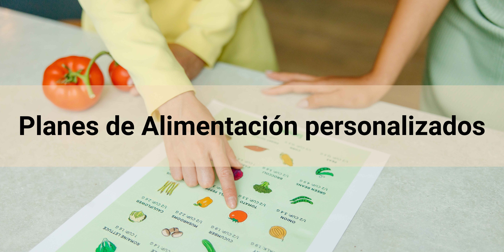
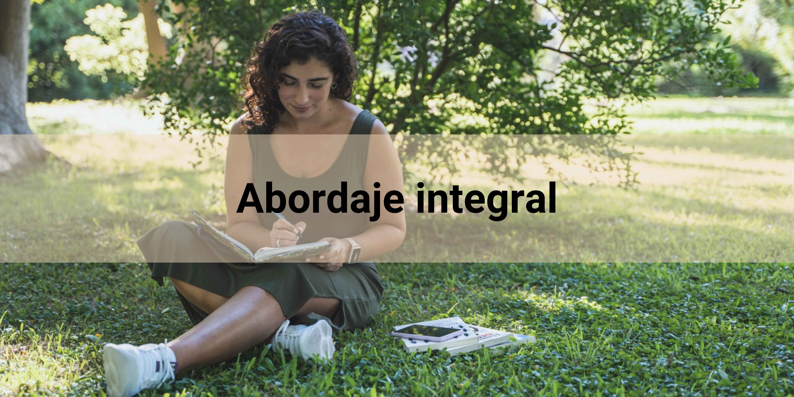
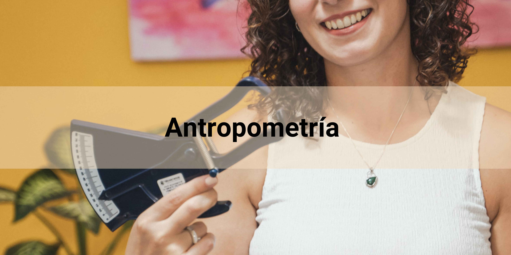

Este consta de: Selección de alimentos con cantidades, distribución diaria y/o semanal, porciones de referencia, ideas de menú, recomendaciones y recetario.
Servicios

El plan de alimentación es una herramienta que se realiza en base a datos recabados
acerca de tu estilo de vida, antecedentes personales, familiares, hábitos alimentarios actuales y
medidas antropométricas. De esta forma, conoceré acerca de tu requerimiento calórico exacto y cuáles
serán los pasos a seguir.

En el ser humano, la alimentación juega un rol muy importante e influyen diferentes
factores más alla del conocimiento que podamos tener acerca de los alimentos y sus propiedades. Es
por eso, que en las consultas aplico técnicas de coaching y biodecodificación. Está más que
comprobado que los alimentos despiertan estimulos emocionales y de placer en nuestro cerebro. Las
prácticas que utilizaremos permitirán conocerte y trabajar tu motivación y adherencia para actuar
con mayor consciencia de forma sostenida en el tiempo.

Además de las evaluaciones tradicionales: IMC (índice de masa corporal) y
circunferencia de la cintura, utilizamos técnicas antropométricas (ISAK, Nivel I)
Mediante esta técnica podemos conocer tu composición corporal, especialmente cuál es tu porcentaje de masa adiposa. Esta información, nos permitirá armar un plan de acción más exacto en base a objetivos específicos.
Si bien a mi parecer, es preferible la consulta presencial, El Ahora
de Comer adapta el servicio a la nueva modalidad y traslada la atención a la comodidad de
tu hogar.

Me comprometo contigo para el logro de tus objetivos tanto durante como fuera de los
controles. Contarás con una línea whatsapp para resolver tus dudas, comunicar tus difultades y cada
logro alcanzado.